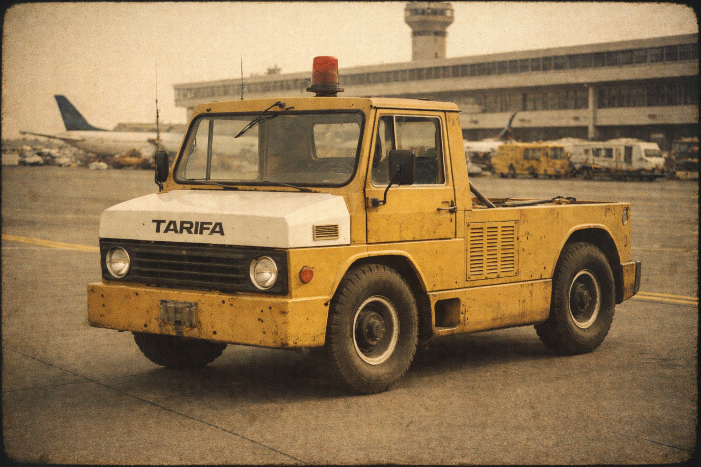
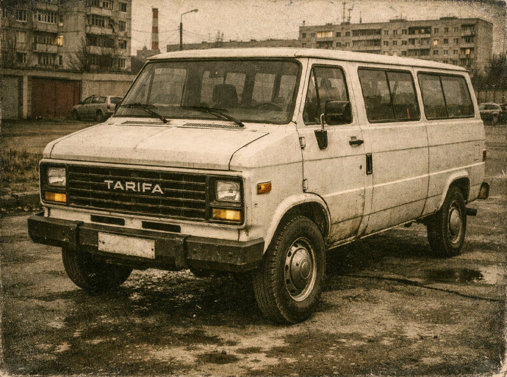
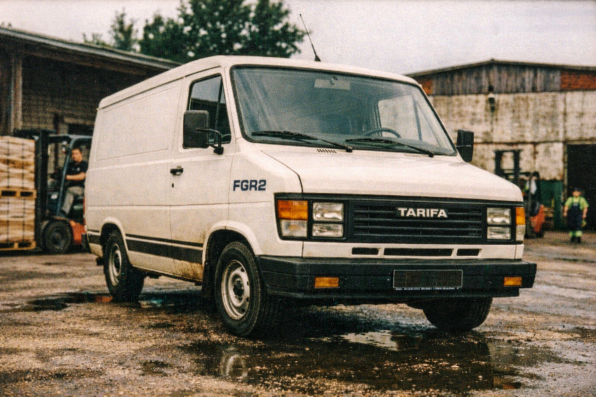
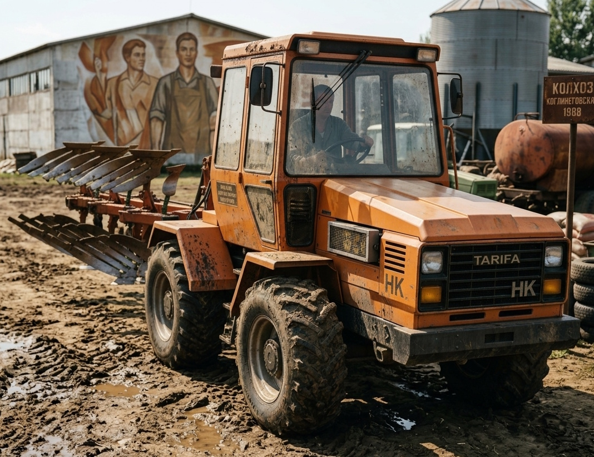
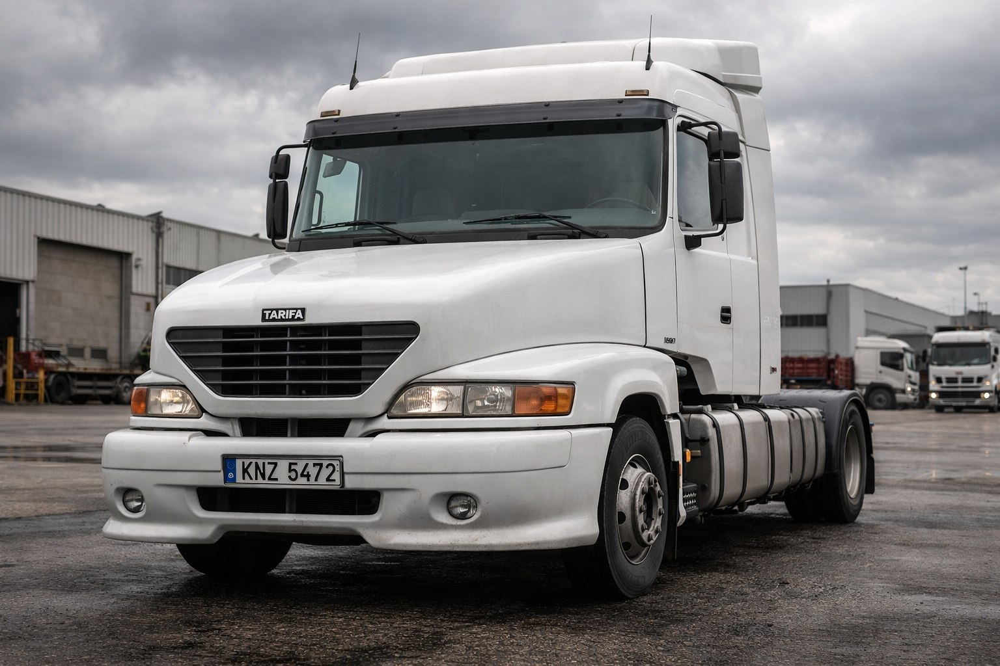
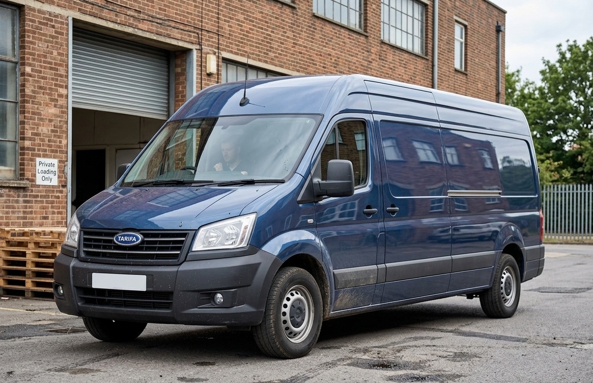

Tarifa
Tarifa is a Kivish private engineering company founded in 1976 in City D. It is known for a pragmatic approach: from airfield tow tractors and runway service equipment to export vans, tractor units, and special-purpose machinery. In the 2000s–2010s, Tarifa became one of the symbols of “no-nonsense” transport—simple, durable, and straightforward—and some of the company’s design choices gained cult status thanks to an unusually long model life cycle.
History
1970s: foundation and airfield specialization

Tarifa was founded in 1976 in City D as a manufacturer of airport equipment: tow tractors to move aircraft from stands to taxiways, baggage-cart tractors, and runway service vehicles. The niche looked unusual for an auto plant, but it guaranteed stable demand and allowed the company to quickly build competence in traction transmissions, hydraulics, and round-the-clock duty cycles.
During the UKR era (up to 1989), production was primarily oriented toward domestic orders and cooperation with friendly markets; the most significant export directions for airfield equipment were the USSR and China.
1980–1982: move into light commercial vehicles — FGR1

In 1980, Tarifa expanded its profile and began producing light commercial vehicles. Using its own body-on-frame base, the company built the Tarifa FGR1 van with a body inspired by American utilitarian design (in particular, the proportions of the Chevrolet G10). The model was positioned as a “work van”: simple, repairable, designed for bad roads and heavy daily use.
Frame standardization quickly produced a family of bodies: FGR1.10 (flatbed), FGR1.20 (tarp bed), and FGR1.Vida (mini tanker). This approach fixed Tarifa’s reputation for “modular practicality”: one base—many variants for different services.
1983–1985: engine criticism and accelerated launch of FGR2

In 1983, industry press (notably AutoWorld) began to highlight complaints about weak pulling power of the FGR1 under load: unloaded the van was considered “flawless,” but with partial cargo and on climbs it lacked dynamics. Tarifa reacted ahead of schedule: already in 1984, the FGR2 generation was released—with its own design, a more durable engine, and a noticeably more comfortable cabin.
Practical improvements included a heater and windshield airflow/defrost—solutions that quickly became “mandatory base spec” for harsh climates. The FGR2 line kept the modular structure: FGR2, FGR2.10, FGR2.20, FGR2.Vida.
In 1985, the family expanded with specialized versions: FGR2.Evak (tow truck) and FGR2.30 (mini crane), anchoring Tarifa in the service-and-municipal equipment segment.
1987–1989: move into heavy special machinery — Mita and HK

Experience in hydraulics and reinforced frames led to expansion into construction and agriculture. In 1987, Tarifa introduced the Tarifa Mita excavator and the Tarifa HK tractor (later established as Horse Kraft). By the end of the 1980s, the company mostly produced commercial and special machinery, building competence in “work-class” categories.
1989–1994: New Kivish, global market, and Minity
The transition to New Kivish in 1989 came with updated legal and economic rules: for manufacturers it meant reworking processes and access to a full global market. Tarifa responded by launching FGR3.Series (by early 1990) and updating its airfield line.
In 1992, against the background of post-Soviet collapse, Tarifa actively supplied the post-Soviet space with residual batches and proven FGR1/FGR2 series, as well as early HK variants. At the same time, the company promoted the more modern FGR3 line and Mita/HK machinery in Europe.
In 1994, Tarifa took a new step into passenger vehicles: the Tarifa Minity minivan appeared, initially aligned with the era’s mainstream minivan ideology. Later, Minity gradually moved away from direct references to foreign design schools and became a self-standing model.
1995–2001: FGR4, semi-frame People, and renaming to Dart
In 1995, Tarifa refreshed the commercial platform with FGR4.Series: a new body, engine, and revised systems architecture. A special place went to FGR4.People—a passenger shuttle version with a semi-frame concept, where the lower frame served mainly as underbody protection, while the main stiffness was provided by the body. The solution was considered pragmatically engineered: the frame could be removed without the structure “falling apart,” preserving operating characteristics.
For passenger variants in the mid-1990s, Tarifa used acquired suspension solutions of “revolutionary” civilian level for that class, noticeably improving comfort in route bodies.
In 1997, Tarifa attempted to enter heavy trucks, but the tractor concept did not reach series production; based on the work, the off-road van-type light truck Tarifa Harit appeared.
In 1998, a new management course returned the heavy truck project to production: Tarifa 0100—an all-wheel-drive cab-over designed to be as simple as possible for rapid launch. In 1999, another leadership change led to a deep redesign: in October 1999, Tarifa 0101 was released with a more “international” appearance and an engine developed in cooperation with KamAZ.
In 2000, Tarifa reorganized naming: the FGR line was closed as a brand and renamed Dart, and multiple “index branches” were consolidated into clear modifications (van, tanker, tow truck, shuttle, etc.) with numbering. Mita, HK, and Minity kept their names.

2001: US advertising and its cancellation after September 11
In 2001, Tarifa prepared to enter the US market with a “cheap vans” campaign filmed in New York. After the September 11 attacks, the company promptly halted and pulled the campaign, considering the use of pre-attack city footage inappropriate during a moment of public trauma. The decision is often cited as an early example of “brand ethics”: Tarifa was mentioned in US media precisely because it chose to stop the advertising.
2005–2012: “design that does not age”

In 2005, Tarifa made its most discussed design move: it brought in a young author from Kora known for a “street” sketching school, and tasked them with rethinking the look of key models. The result was a new design for the Dart van, the Minity minivan, and heavy truck lines. Dart received a more “work-oriented” and spacious architecture, Minity gained its own character without direct copying of foreign silhouettes, and the tractor unit got a compromise style combining early simplicity with more modern geometry.
Unexpectedly even for Tarifa, the 2005 design turned out so strong that the company avoided exterior changes for years, limiting updates to power, interiors, and compliance with new emissions standards. By 2012, many inside the company said: “there’s nothing to refresh—the exterior still looks current.”
2011–2017: Misi-N and the short Style era

In 2011, Tarifa created its first truly mass “people’s” passenger car, Tarifa Misi-N, designed for Kivish Korean Peninsula. The engineering philosophy was maximally pragmatic: to reduce cost, an engine derived from an early-2000s Dart unit was used by reducing the cylinder count. Misi-N became an important model for training and mass motorization, and within the company a dedicated passenger-car division appeared with updated branding.
In 2013, Tarifa unexpectedly entered the mid-size sedan segment with Tarifa Style, aimed at competing with established passenger-car makers. Interest peaked in 2013–2014, then the market stabilized. In 2017, Style was discontinued as a limited, completed project.
2019–2023: Revint Di3, the major 2022 redesign, and the end of Misi-N
In 2019, Tarifa released a niche model Tarifa Revint Di3—a car inspired by classic late-1990s street-racing coupe aesthetics (often associated with the Skyline R34). The project was short-lived: sales ended in 2021, preserving the model as an image and collector item.
In the same year, the legendary Dart received minimal exterior updates (including a light signature inspired by “angel eyes”), plus power gains and emissions revisions. The real era shift came in 2022: Tarifa finally updated the van’s design, followed by Minity, the tractor unit, and also deeply modernized the look and ergonomics of HK and Mita, bringing special machinery closer to modern international visual standards.
In 2023, Tarifa ended Misi-N production: the last car was sold to private buyer Li Yong Jun, and the dealer center marked the event as a symbolic “end of an era” for the brand’s most affordable model.
2025–2026: stabilization and a “boring” hatchback
By 2025, Tarifa had stabilized the 2022 lineup and did not release new passenger models. Inside the division, ideas of importing and rebadging Chinese cars were discussed, but the practice was rejected as reputationally toxic. In airfield equipment, budget solutions appeared for low-cost trims—for example, built-in fans as a simplified replacement for air conditioning.
In 2026, the passenger-car division introduced the Tarifa Minic hatchback, which critics called “absolutely ordinary”: it caused neither enthusiasm nor strong dislike. In the same period, Tarifa increased cooperation with KiBus, releasing utilitarian shuttle variants on a commercial platform without trying to “wow” with design, which triggered online discussions about a decline in the brand’s ambition.
Technologies
- Modular frame base — early FGR1/FGR2 philosophy: one platform, many bodies (flatbed, tarp, tanker, tow, crane).
- Semi-frame underbody protection (FGR4.People) — frame as protection element with body-priority load structure.
- Fast engineering iterations — accelerated FGR2 after FGR1 criticism, plus “quiet” interior revisions without exterior redesign.
- Simplified engine architecture (Misi-N) — derived units for minimal total cost of ownership.
- Cab ergonomics — consistent improvements to operator workplaces in airfield and construction machinery.
Marketing
Tarifa’s marketing history is often built on “anti-pathos.” The best-known episode is the 2001 US campaign stopped after September 11, which gave the brand a reputation for tact and caution. Not less important is the “2005 design legend”: hiring a young Kora designer, after which Tarifa’s van design became associated with rare resistance to fashion and time.
Motorsport
- Revint Di3 (2019–2021) — an image model for tuning and drift fan culture; the project ended as a niche run.
Cultural impact
Tarifa is perceived as a “transport for work and life” manufacturer rather than a luxury brand. The 2005 van design became the company’s visual calling card for decades. Misi-N settled in mass memory as the car that launched broad personal motorization in Kivish Korean Peninsula, while Revint Di3 remained a short but bright attempt to speak to fan car culture in its own language.
Criticism
The company has been criticized for unstable management decisions in the late 1990s (frequent course changes around 0100/0101), as well as for “conservatively holding” successful designs without external changes. In the 2020s, passenger-division decisions were also debated: the Minic hatchback was perceived as too generic, which contrasted with the brand’s louder periods (2005 and 2019).
See also
Notes
- Material is based on the fictional Neverpedia universe.